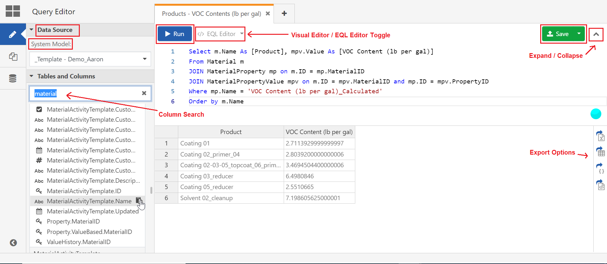
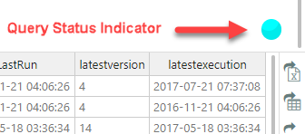
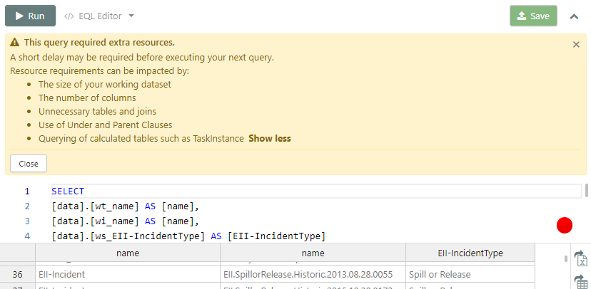
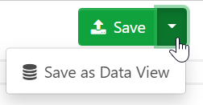
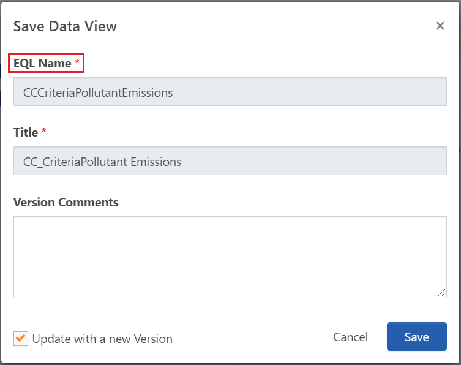

While the Visual Editor can help you build queries quickly, there are some EQL capabilities that cannot be replicated through that interface. With the EQL Editor you can use standard EQL syntax to take full advantage of all the features EQL has to offer. All users can save queries to the Query Library for use by anyone in the system. Advanced users can also save queries as Data Views.
This topic will focus solely on how to use the EQL Editor. For more detailed information about EQL, please see the EQL User Guide. Users (even those in the Administrators group) must be in the package role 'DataViewCreateAndEdit' to create Data Views and access the Data Views Library.
Working with the EQL Editor
If you are using the Data Preparation Tool for the first time, the Query Editor will be in Visual Editor mode by default. Click on the Visual Editor/EQL Editor Toggle (top left next to the Run button) to switch modes. Standard EQL tables and available Data Views are located on the sidebar on the left; Data Views can be identified by the icon. Clicking on a table or Data View will display a list of its columns. You can scroll to browse through them, or use the search box. Clicking on a column name will automatically save it to your clipboard. Users with access to both Environmental and Ergonomics tables can switch between them using the Data Source drop down. Users with access to more than one System can switch between them using the System Model drop down.
For users with multiple systems, when saving a query or Data View, it will be stored in both the System in the System Model drop down and the System the Data Preparation Tool was loaded from.

You can enter a query by typing it in the editor, or by opening a saved query from the Query Library. Users with appropriate permissions can do the same with Data Views saved in the Data Views Library. If the query was constructed and saved using the Visual Editor, you can use the toggle to view the EQL syntax. Note that editing a query while in EQL Editor mode will disable the Visual Editor for the query in that tab. If you want to make edits to such queries with EQL syntax, it is recommended that you click on the Copy button, click on the white '+' icon to create a new tab, and paste the query there. If you are beginning your query in the EQL Editor, any text present in the editor will disable the Visual Editor in that tab.
Click the Run button or press Ctrl + R to run your query. It is quite common to run queries multiple times as they are being constructed in order to ensure that you have exactly the data set you need. However, increasingly complex queries require more and more processing power to execute, and repeatedly running extremely complex queries can have a significant impact on the overall performance of your system. In order prevent this, the Data Preparation Tool monitors the complexity of the query you have executed, and displays the Query Status Indicator to signal you of the stress being put on your system each time you run it.

The Query Status Indicator will return one of five statuses:
Excellent
Good
Satisfactory
Poor
Extra Resources Required
Queries with this status will display a warning. If run more than once in succession, the Run button will display a "cool-down period", which will prevent you from running the query again for a few seconds. Adjusting the query and running it again with an improved status will allow you subsequent runs without a cool-down period. Additional runs requiring extra resources will increase the length of the cool-down period.

Click the Save button top right to save your query. All saved queries in the system you are working must have a unique name. If you're saving an existing query, you can keep the Update with a new Version box checked to overwrite the previously saved query, or uncheck it to save it as a new query. You can find your saved query in the Query Library.
Users with appropriate permissions can save their queries as Data Views. The Save button will now have a down-carat on the right; click to bring up the Save as Data View option. Along with the Title, you are required to choose an EQL Name for your Data View. The name can only contain letters and numbers, spaces and special characters cannot be used. Both the EQL Name and Title must be unique to the system you're working in.


Once you have run your query, you can use the controls on the far right of the Results Pane to export your data. You can save your results in one of the following formats:
.xlsx
.csv
JSON
XML
Other EQL Editor Features:
Support for EQL code highlighting
Support for auto-completion. As you type, press CRTL+SPACE to activate auto-completion
Highlighting of the current line
Selected word highlighting
Auto indent like in previous line
EQL Editor Keyboard shortcuts:
Keyboard Shortcut
Action
Ctrl-Space
Auto completion after a table alias.
Ctrl-R
Run query.
Ctrl-A (PC), Cmd-A (Mac)
Select the whole content of the editor.
Ctrl-D (PC), Cmd-D (Mac)
Deletes the whole line under the cursor, including newline at the end.
Ctrl-Backspace (PC) Cmd-Backspace (Mac)
Delete the part of the line before the cursor.
Ctrl-Z (PC), Cmd-Z (Mac)
Undo the last change.
Ctrl-U (PC), Cmd-U (Mac)
Undo the last change to the selection, or if there are no selection-only changes at the top of the history, undo the last change.
Ctrl-Up (PC), Cmd-Up (Mac)
Move the cursor to the start of the document.
Ctrl-Down (PC), Cmd-End (Mac), Cmd-Down (Mac)
Move the cursor to the end of the document.
Alt-Left (PC), Cmd-Left (Mac), Ctrl-A (Mac)
Move the cursor to the start of the line.
Alt-Right (PC), Cmd-Right (Mac), Ctrl-E (Mac)
Move the cursor to the end of the line.
Home
Move to the start of the text on the line, or if already there, to the actual start of the line (including white space).
Ctrl-Del Alt-D (Mac)
Delete up to the end of the word after the cursor.
Shift-Tab
Auto-indent the current line or selection.
Ctrl-] (PC), Cmd-] (Mac)
Indent the current line or selection by one indent unit.
Ctrl-[ (PC), Cmd-[ (Mac)
De-indent the current line or selection by one indent unit.
Tab
If something is selected, indent it by one indent unit. If nothing is selected, insert a tab character.

 Good
Good
 .xlsx
.xlsx .csv
.csv XML
XML